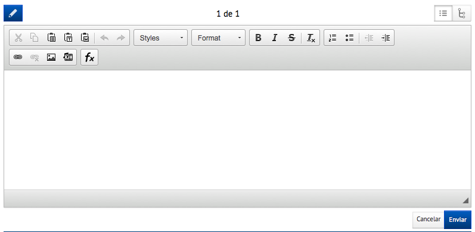
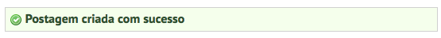
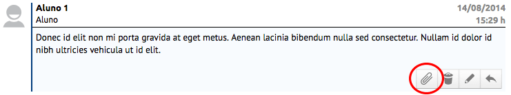
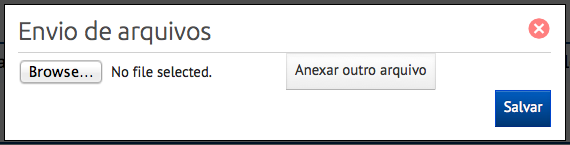
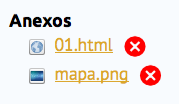
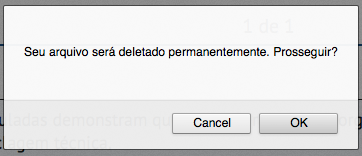

Danger
MATERIAL INCOMPLETO
Nesta página são listadas os fóruns disponíveis sobre conteúdos vinculados à disciplina escolhida, sendo informado o nome e período de disponibilidade de acesso.
Note
Após a data final o fórum será bloqueado, tendo seu acesso restrito apenas para leitura, onde apenas o responsável pela disciplina terá uma semana adicional para realizar novas postagens.
Ao acessar um fórum, será exibida uma descrição sobre o tópico a ser discutido e a lista de postagens já realizadas, que podem ser visualizadas em dois formatos:
Postagens ordenadas como lista
Postagens ordenadas em árvore
Após acessar um fórum podemos realizar uma nova postagem clicando sobre o botão (Nova postagem). Logo após será apresentado um editor de texto.
Ao concluir seu texto basta clicar no botão Enviar. Para descartar sua postagem basta clicar em Cancelar. Se sua postagem tiver sido enviada a seguinte mensagem será exibida:
Para responder a uma postagem basta clicar no botão (Responder), localizado no canto inferior direito de qualquer postagem.
Ao realizar uma postagem (seja ela nova ou uma resposta) podemos anexar arquivos a ela, basta clicar no botão (Anexar arquivo).
Em seguida será exibida a seguinte janela:
Nela podemos clicar sobre o botão Selecionar arquivo ou Browse (depende do idioma do seu sistema) para escolher o arquivo a ser anexado. Caso se deseje enviar mais um arquivo, clique em Anexar outro arquivo. Ao concluir, clique em Salvar.
Os arquivos anexados serão apresentados como links na postagem do fórum, conforme o exemplo abaixo.
Caso deseje apagar um arquivo clique no ícone (Remover arquivo). Uma mensagem de confirmação será exibida em seguida.
Danger
A ação de remover um anexo é IRREVERSÍVEL.
Para editar uma postagem basta clicar no botão (Editar), localizado no canto inferior direito de qualquer postagem.
Warning
Só é possível editar a postagem caso ela NÃO possua réplica.
Para apagar uma postagem basta clicar no botão (Apagar), localizado no canto inferior direito de qualquer postagem.
Warning
Só é possível apagar a postagem caso ela NÃO possua réplica.
Danger
A ação de apagar uma postagem é IRREVERSÍVEL.
{kind=link}
{kind=link}
{kind=link}
{kind=link}
{kind=link}
{kind=link}